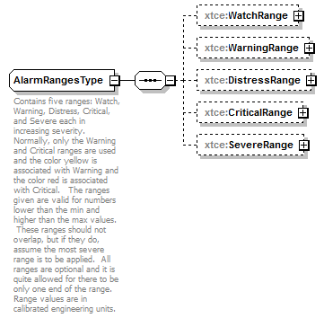

| diagram |
 |
| namespace |
http://www.omg.org/space/xtce |
| children |
xtce:WatchRange xtce:WarningRange xtce:DistressRange xtce:CriticalRange xtce:SevereRange |
| used by |
|
| annotation |
| documentation | | Contains five ranges: Watch, Warning, Distress, Critical, and Severe each in increasing severity. Normally, only the Warning and Critical ranges are used and the color yellow is associated with Warning and the color red is associated with Critical. The ranges given are valid for numbers lower than the min and higher than the max values. These ranges should not overlap, but if they do, assume the most severe range is to be applied. All ranges are optional and it is quite allowed for there to be only one end of the range. Range values are in calibrated engineering units. |
|
| source |
<complexType name="AlarmRangesType">
<annotation>
<documentation xml:lang="en">Contains five ranges: Watch, Warning, Distress, Critical, and Severe each in increasing severity. Normally, only the Warning and Critical ranges are used and the color yellow is associated with Warning and the color red is associated with Critical. The ranges given are valid for numbers lower than the min and higher than the max values. These ranges should not overlap, but if they do, assume the most severe range is to be applied. All ranges are optional and it is quite allowed for there to be only one end of the range. Range values are in calibrated engineering units.</documentation>
</annotation>
<sequence>
<element name="WatchRange" type="xtce:FloatRangeType" minOccurs="0"/>
<element name="WarningRange" type="xtce:FloatRangeType" minOccurs="0"/>
<element name="DistressRange" type="xtce:FloatRangeType" minOccurs="0"/>
<element name="CriticalRange" type="xtce:FloatRangeType" minOccurs="0"/>
<element name="SevereRange" type="xtce:FloatRangeType" minOccurs="0"/>
</sequence>
</complexType> |